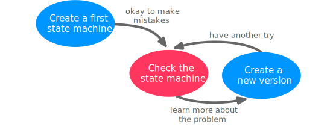
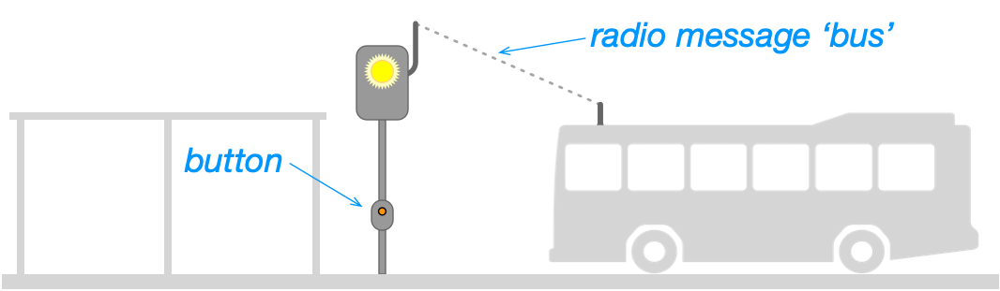

Until now, you have learned about all the features that we need for state machines, but you have not yet created one on your own.
Creating state machines is a valuable engineering task. While you do it, you understand gradually more of your system and the task it should solve. Usually, this is difficult in the beginning but gets easier as you learn more. In some cases it may also happen that you need to start over, because you have understood, for example, that it is easier to model some behavior with a set of state machines instead of a single one. This will get much better with some experience. But it is not always difficult. Often, you manage to handle a problem after some attempts and then you “see” that you have a good solution. In that respect, state machines are very nice, because a problem, once modelled properly, can be easily checked by executing the state machines.
During this and the following weeks, you get several opportunities to design state machines. This is useful for you, since it allows you to handle concurrency in systems correctly, which is useful no matter which programming language or framework you will later use. Also, creating state machines is a task that trains your generic skills as an engineer, and many problems can be mapped to that of state machines.
Creating High-Quality State Machines
State machines are precise artefacts that can take care of the detailed behavior, so they are suitable for unambiguously define how a system should work. In the end, you did a good job if you are able to map user requirements to a set of consistent, high-quality state machines.
With high quality, we mean here that:
The state machine is syntactically correct.
The state machine describes behavior that makes sense and is clearly defined.
The state machine has a good layout that conveys how it works and helps the reader to understand it.
The state machine can be implemented in code.
How to get started, when your paper or editor is empty in the beginning? It can actually be hard to create a state machine from scratch, also for experts. Actually, I think I have never observed that even experts write down a state machine correctly on the first attempt, because there is always something that you forget. So, they key to creating a state machine: Don’t even try to make it correct on the first attempt, but approach it iteratively. Sometimes it is a good idea to separate the task of creating something from the test of validating it. Otherwise it is easy to get stuck. So for state machines, we switch between writing down a state machine and then checking it.

Writing Down a State Machine
To create down a state machine, don’t ba afraid to just sketch a first version. The following tips may help:
Start with pencil and paper. Sometimes it is easier to explore design when you work alone, very focused and only with pencil and paper, where you can quickly sketch some states and transitions, without the pressure to make it work completely immediately. I have lots of experience in designing state machines. I still start with pencil and paper each time, before I go over to an electronic editor.
Identify all triggering events. Identify and write down all kinds of events that can trigger a transition in the state machine. Make a list of all incoming messages you may react to, and all timers that are necessary. Often these triggeres are determined by the problem to solve.
Identify all actions. Make a list of all actions that are used by your state machine to achieve its purpose. In this course, we use actions that we can use in Python.
Identify any messages to send. If the state machinen communicates with another one, you should list all messages it may send to the other machine, which you can treat just like an action. Note that all messages to receive is already included in th elist of triggers above.
Introduce one state after the other, and try to map states to states of whatever your state machine describes. Sometimes, some states are quite obvious, like the states of a lamp, which are on and off. Sometimes, you disciver that your problem has actually more states than you initially thought. For example can an electronic door lock have more than the obvious states locked and unlocked. The lock may be engaged meaning that it can be potentially opened, but if the user does not open it, it goes back into its locked state. Working with the problem will reveal this.
Identify a default state. For some problems, it may help to think of a default state that the state machine should be in. It may then be easier to explore the other states based on this. For example, think of a doorlock. It may be easier to design a state machine for it when you start thinking of it being locked first when the system starts, and then think what should happen to open it.
Explore the problem. Most likely, you will explore the problem and find out that you haven’t understood everything, or that there are details that you have overlooked in the beginning. Be aware of what you learn, and how you can represent it with states and transitions. he state machine challenges you to learn more about the system.
Start fresh. When you get completely stuck, throw your sketch away and start fresh.
Checking State Machines
Once you have a state machine, even a partial one, you can check if it can actually work.
For each of its states, you should check:
Are all states reachable? This means, can you start at the initial state and from there reach any of the other states by following a sequence of events? Or are there some states that you can never reach? Obviously, that must be a mistake, because if these states are not reachable, what’s the point in having them? Din the missing transitions towards these states and try again.
Is there a deadlock? This means, is there a state from which you cannot find out way out, for instance to a final state that terminates the machine? If there is a state that you cannot leave anymore, is that intended by the application?
Are all possible events handled? In each state, did you think of any events that may arrive? Remember, that events arriving at the head of the queue and that are not exoected in the form of triggers are discarded, that means, thrown away. Check if you have missed some!
For each transition you should check:
Does every transition have a triggering event? This means that every transition must declare a trigger in the form of a message reception, a timer expiration, unless it is an intial transition or following a choice pseudo state.
Do transitions with choice states block? Decisions must not block, which means that one of the outgoing branches of a choice state must have a guard that is True. The safest way to achieve this is by letting one of the outoing branches have an else branch.
For each timer you should check:
Are timers properly started? All timers must be started by the machine itself, so a timer that is not started will never expire and is hence not useful. Find a proper place to start it, either as part of a transition effect or as entry or exit actions, just like other actions.
Are timer expirations handled? Check what happens when a started timer expires. If a timeout happens in a state that does not decløare an outgoing transition triggered by it, it is simply ignored. This may be okay in your machine (because something else happended and you don’t need the timer anymore), but it can also be the sign of an error.
These are the rules that you can check even without knowing exactly what the application should do, just by looking at the state machines. These are generic rules, independent of a specific application, and if they don’t hold, it is very likely that you do have a problem. But then there are also errors that have to do with your specific application. This can be a bit harder to find out. You need to simulate the state machines using your fingers and go through it state by state and event by event. When the problem is not too big, this is possible. Next week, once we implement state machines in Python, you will also be able to build functioning prototypes, which you can use and test to see how the final state machine behaves.
Getting Started: Bus Stop
You should build the state machine for a bus stop signal light. It is intended for bus stops where busses only halt when there are passengers, and which are located so that it is difficult for a bus driver to see passengers when they approach. It may also be that they need to get off a larger road, but can stay on that road if there are not passengers. The solution is a signal light that passengers can activate at the buss top and which is better visible for the approaching bus.

Here are the detailed functional requirements:
Passengers waiting at the bus stop can press a button, upon which the signal lamp switches on.
The bus driver can switch the light off via a radio message bus.
The light switches off 10 minutes after it was pressed, even if no bus came.
If a passenger presses the button and the light is already on, it stays on, but the 10 minutes timer starts again with 10 minutes.
You can ignore for now that the system may be switched off, so you need no final state.
Create a State Machine, Individually
Use some time to find a first solution each one on your own.
Use pencil and paper.
Create a State Machine, Together
Compare your solutions, one at a time.
Starting again with an empty screen, whiteboard or paper, design the state machine once again, together.
Play through this simple scenario, and correct your state machine if necessary.
Solution
Once you are happy with your solution, have a look at my solution.
Compare the solutions in detail.
If you find that my solution has any flaws, please discuss on MS Teams!
Prepare a document where you show your solution and mine side-by-side, and compare.
Reflect about your process towards this machine.
What did you get right immediately?
What was difficult?
Were there misunderstandings?
Kitchen Timer
You should build the state machine for the following device:
It’s a kitchen timer. It has 4 LEDs and a button. When the button is pressed, the first LED is switched on, and the plug provides electricity, for instance for a coffee machine. After 15 minutes, the LED is switched off and the plug is turned off. Whenever the button is pressed when an LED is already on, the next LED is switched on and time timer is set to 30, 45, or 60 minutes, respectively. If all LEDs are on, and the button is pressed, all LEDs and the plug are switched off.
You can ignore that the LED of the segment that is currently active is blinking, just assume it lights all the time.
Use the following actions:
start_timer('t',... ) This starts a timer with name t. The second argument is the time, given as seconds. If a timer is already active, the timer is simply restarted with the new, updated timeout.
stop_timer('t'). Stops a timer. If no such timer exists or has already timed out, nothing happens.
set_leds(1, 0, 0, 0). Control all of the four LEDs at the same time. 1 means on, 0 means off. Here, the first LED is switched on, the others are off.
set_power(True) switches the power on (True) or off (False)
You can assume that whenever the button is pressed, the state machine will receive a signal with the name switch.
Create a State Machine, Individually
Use some time to find a first solution each one on your own.
Use pencil and paper.
Create a State Machine, Together
Compare your solutions, one at a time.
Starting again with an empty screen, whiteboard or paper, design the state machine once again, together.
Play through this simple scenario, and correct your state machine if necessary.
Solution
Once you are happy with your solution, have a look at my solution.
Compare the solutions in detail.
If you find that my solution has any flaws, please discuss on MS Teams!
Prepare a document where you show your solution and mine side-by-side, and compare.
Reflect about your process towards this machine.
What did you get right immediately?
What was difficult?
Were there misunderstandings?
Checklist
Blackboard
Deliver the reflection over your solutions in comparison to the ones provided, both for the bus stop and the kitchen timer.
MS Teams
Ask for feedback in general
Report any errors with the provided solution
Team Reflection for This Unit
Add another section to the team reflection document, just like last week.